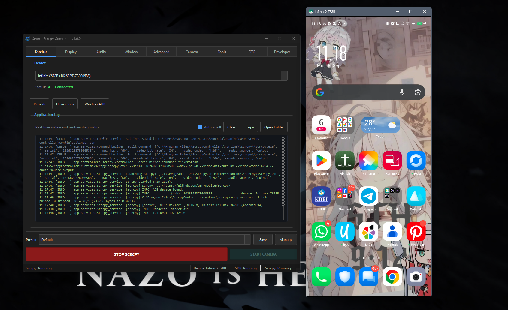
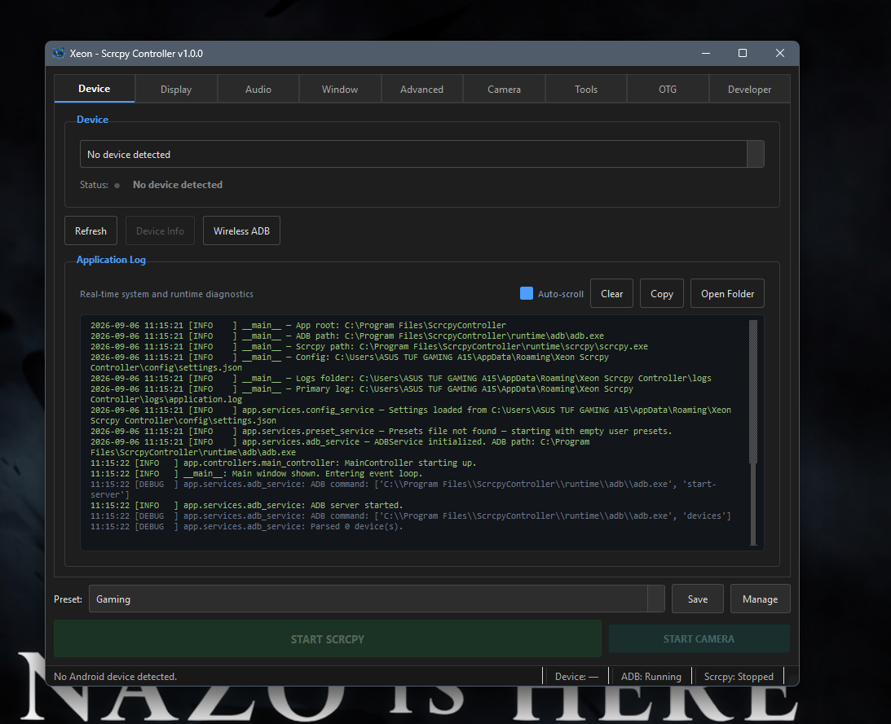
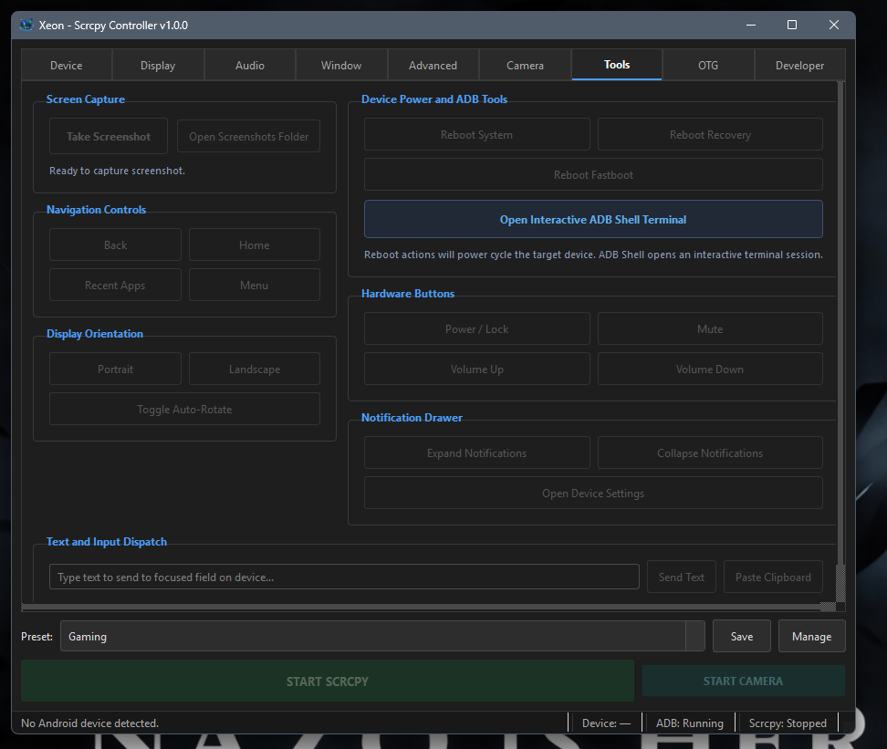

A refined desktop controller for Android screen mirroring & ADB
High-framerate video streaming, low-latency audio capture, dedicated camera mode, kernel UHID input, and direct ADB diagnostics in a clean, unified application with zero background command prompts.

Application Screenshots
High-resolution captures from real-world execution on Windows 11. Click any screenshot to enlarge.
Live Mirroring Session
Real-time screen projection alongside the GUI controller and active status indicators.

Device & Diagnostics
Connected device management, wireless pairing, and color-coded runtime log stream.

Tools & ADB Terminal
Hardware key emulation, remote reboot triggers (Recovery/Fastboot), and embedded ADB shell.
Feature Breakdown
Designed for developers, gamers, and productivity power users who need reliable Android device control.
Display Mirroring Engine
Granular video resolution bounds, framerates up to 120 FPS, and bitrates up to 64 Mbps. Supports H.264, H.265 (HEVC), and AV1 video codecs with hardware encoder selection.
Audio Forwarding & Duplicate
Streams Android system audio directly through PC audio devices without auxiliary cables. Supports OPUS, AAC, FLAC, and uncompressed RAW PCM streams with audio duplicate mode.
Dedicated Camera Mode
Turn your Android device into a high-definition webcam for streaming or meetings. Streams front or rear camera sensors directly without mirroring the display.
Hardware OTG Passthrough
Simulates physical USB keyboard and mouse hardware using Linux kernel UHID drivers. Operates without display rendering and bypasses OEM software input blocks.
ADB Power & Recovery Tools
Power cycle devices safely. Reboot directly into Android System, Stock/Custom Recovery mode, or Fastboot/Bootloader mode with interactive confirmation prompts.
Interactive ADB Shell Terminal
Embedded PyQt terminal with security prompt gate, asynchronous process streaming, Up/Down command history, and instant system inspection chips.
Technical Reference & Guides
Comprehensive guides covering setup, audio configuration, OEM permission fixes, and hotkeys.
Prerequisites & Android USB Setup
Xeon Scrcpy Controller uses the Android Debug Bridge (ADB) to manage and mirror connected hardware. Ensure USB Debugging is authorized on your target device before starting.
Enabling USB Debugging
- Open
Settings>About Phoneon your Android device. - Tap
Build Numberrepeatedly (7 times) until the prompt confirms developer mode is unlocked. - Navigate to
Settings>System>Developer Options. - Enable the USB Debugging toggle.
- Connect your device via USB cable and select Always allow from this computer on the authorization prompt.
Wireless TCP/IP Pairing
To run without a physical cable over local Wi-Fi, click the Wireless ADB button in the application, or execute:
adb tcpip 5555
adb connect <DEVICE_IP_ADDRESS>:5555Download & Version Releases
Signed 64-bit Windows installer with bundled portable runtimes (Scrcpy v4.1 & ADB Platform Tools).
System Requirements
Frequently Asked Questions
scrcpy.exe is compiled as a Console User Interface (CUI) binary. By default, Windows allocates a console window when it launches. Xeon Scrcpy Controller explicitly suppresses this behavior using the Windows API flags CREATE_NO_WINDOW (0x08000000) and STARTUPINFO.wShowWindow = 0 (SW_HIDE), ensuring zero background command prompt pop-ups while preserving the hardware-accelerated video rendering window.